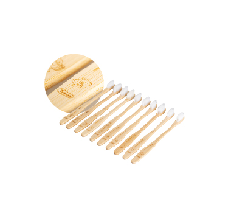

-
울산은 대한민국의 동남부에 위치한 광역시다. 동해안과 맞닿아 있으며, 울산항은 대한민국에서 가장 큰 항구 중 하나다. 울산을 들여다보면 공업 도시라는 이미지와 다르게 또 다른 매력을 발견할 수 있다. 울산 12경 중 하나인 태화강국가정원은 20개가 넘는 테마 정원이 있다. 그중에서도 삼호대숲은 꼭 가봐야 할 명소다. 바다와 바위가 절경을 이루는 대왕암공원은 밤에 가면 야경을 즐길 수 있다.
-
장생포 고래문화특구는 레트로 감성을 느낄 수 있으며, 장생포고래박물관, 문화마을, 울산항은 아이들과 가족 여행하기 좋은 곳이다. 울산은 영남 알프스 둘레길이 있을 정도로 트레킹 하기 좋은 곳이기도 하다. 영남알프스는 사계절 아름다운 풍경을 자랑한다. 봄에는 봄꽃이 만발하고, 여름에는 시원한 계곡과 울창한 숲을 즐길 수 있다. 가을에는 억새가 장관을 이루고, 겨울에는 설경이 눈부시게 아름답다.
-
밤에 드라이브가 생각난다면, 울산대교로 떠나면 어떨까? 울산 남구와 동구를 이어주는 울산대교는 길이 1,800m에 이르는 다리다. 외고산 옹기마을은 국내 최대 규모의 옹기마을로 매년 옹기축제가 열린다. 옹기마을은 박물관과 아카데미가 있어 옹기 체험이 가능하다. 한국에서 일출을 보고 싶다면, 가장 빨리 해가 떠오르는 간절곶에 가야 한다. 간절곶 등대에서 소망우체통을 걸으며 바다를 바라보면 완벽하게 하루를 시작할 수 있다.
K-푸드에 관심이 많다면 참기름과 들기름을 꼭 구입하기를 추천한다. 참기름은 비빔밥, 불고기 등을 요리할 때 사용하며, 들기름은 공복에 1스푼 먹으면 풍부한 식물성 오메가 3를 섭취할 수 있다. 참기름은 참깨를 볶아서 압착해 기름을 짜내고, 들기름은 들개를 짜서 얻은 기름이다.
 |
옛간 참기름 & 들기름
‘옛간’은 3대에 걸쳐 60년간 참기름, 곡물 전문 전통 방앗간이다. 고유의 방식으로 진하고 고소한 맛을 내는 것이 특징이다. 참기름을 산다면 꼭 흔들어 먹어야 한다. 참기름은 햇빛이 들지 않는 서늘한 곳에 보관하고, 들기름과 생들기름은 개봉한 후 냉장고에 보관하는 것이 좋다.
|
간절곶은 한반도에서 가장 먼저 해가 떠올라 새해가 되면 전국에서 관광객이 몰려드는 명소다. 이 유명한 관광지인 간절곶을 기념하기 위해 만들어진 빵은 커스터드 크림과 앙버터 팥이 들어있는 빵이다. 해빵은 당일 한정수량으로만 판매하기 때문에 구입하려면 조금 서두르는 편이 좋다.
간절곶해빵 해빵
간절곶해빵은 우유와 먹기 좋은데, 차갑게 먹으면 더 맛있게 먹을 수 있다. 개별 포장되어 선물용으로도 좋다. 이름은 간절곶해빵이지만 본점의 경우 간절곶에서 좀 떨어진 곳에 위치하고 대중교통으로는 접근이 힘든 편이라 자가용을 이용하는 편이 좋다.
|
울산은 국내의 조선소가 몰려 있어 ‘배의 도시’로 유명하다. 울산에서는 ”잘 만든 배에 배를 실어 수출한다“는 우스갯소리가 있다. 배 맛이 뛰어나다는 의미에서 나온 이야기다. 서생 지역에서 재배되는 배는 바닷바람이 올라가는 길목에서 자라, 식감은 아삭하고 당도는 높다.
소월당 배빵
울산 특산물로 유명한 배로 만든 배빵. 입안에 넣으면 오돌토돌한 알갱이가 씹히고, 배 스프레드의 단 맛이 느껴져 부드럽게 먹을 수 있다. ‘소월당’의 배빵은 개별 포장되어 있어 먹기 편하고, 남녀노소 좋아하는 맛이라 선물하기에 좋다.
|

울산을 대표하는 수제 맥주는 목 넘김이 시원하고 끝맛이 깔끔하다. 울주군의 ‘트레비어’는 대한민국 1세대 수제 맥주 양조장이라는 전통을 지니고 있으며,영남 알프스라고 불리는 울주의 물과 자연으로 맥주를 생산한다.
트레비어 맥주
취향에 따라 자신이 좋아하는 맥주를 마실 수 있는 브루어리 펍을 운영하는 트레비어의 맥주는 수제 맥주를 좋아한다면 꼭 마셔봐야 한다. 2019년 대한민국 주류대상에서 대상을 받은 ‘처용IPL’, 한국 쌀을 사용한 ‘우리쌀라거’ 등 알고 먹으면 맛의 깊이와 재미가 배가된다. 다양한 맥주의 맛이 궁금하다면 트레비어 맥주를 즐겨보는 것을 추천한다.
|
고래떡은 울산을 상징하는 고래를 본떠서 만든 떡이다. 고래 모양의 귀여운 떡은 한입 베어 먹으면 쫄깃함과 고소함이 가득 맴돈다. 간식으로도 먹기 좋고 답례품으로 선물하기도 좋다. 아침 대용으로도 먹기 좋다. 울산 여행의 끝에 ‘고래’가 생각나는 고래떡과 함께 울산을 떠올려보길 추천한다.
고래떡방협동조합 고래떡
고래떡은 물이나 설탕, 방부제를 쓰지 않아 소화가 잘된다고 한다. 빵처럼 쫀득쫀득한 식감이 특징이며, 답례 떡이나 축하 떡으로 많이 사용된다. 우유찹쌀 고래떡과 자색고구마떡, 커피찹쌀 고래떡 등 종류가 다양해 기호에 맞게 먹을 수 있으며, 우유나 커피와 잘 어울린다. 미리 만들어놓지 않기 때문에 구입하려면 하루 전 전화로 예약해야만 한다.
|
고래의 고향 장생포에는 고래문화특구가 위치한다. 장생포는 우리나라의 고래잡이 역사가 시작된 곳이기도 하다. 장생포에는 고래박물관이 있으며, 생태체험관, 울산함, 고래문화마을 등 주변에 관광할 곳이 많다. 고래포스터나 고래 인형은 사람들이 많이 구매하는 제품이다.
업사이클링 범고래 인형 체험키트
멸종위기 범고래를 귀여운 인형으로 만들어볼 수 있는 체험키트다. 환경을 생각하는 마음으로 즐겁게 체험할 수 있다. 인형외피와 업사이클링 솜, 나무막대로 구성되어있는데 외피의 지퍼를 열어 솜을 채우고 지퍼를 닫으면 귀엽고 폭신폭신한 인형을 만들 수 있다.
|
|
별까루 고래인형
고래 인형은 아이들과 어른 모두에게 인기 있는 선물이다. 여기서 판매되는 고래인형은 폐플라스틱을 재활용해서 만들어지기 때문에 친환경 제품이라는 의미도 더해진다.
|
옹기는 한국의 고유한 생활 용기로 유약을 묻히지 않는 것이 특징이다. 특히 옹기로 만든 찻잔이나 뚝배기는 선물하기에 좋다. 한국에서 사용하는 옹기의 50%가 울산 울주군에서 생산된다. 옹기 외고산마을을 구석구석 걷다 보면, 옹기장인들의 전통 술잔, 주병 세트를 만날 수 있고, 옹기박물관과 민속박물관, 그 밖에 다양한 체험과 사진 명소를 구경할 수 있다.
옹기 블루투스 스피커
옹기 외고산마을의 ‘쉼표 공방&카페’는 원샷 잔과 술잔 세트, 옹기로 만든 블루투스 스피커 세트를 판매한다. 옹기의 무궁무진한 변신을 보고 싶다면 방문하기를 추천한다.
|
울산 중구에 위치한 울산큰애기집은 관광 안내소와 함께 운영된다. 울산 반구동 여성들을 노래한 ‘울산큰애기’는 울산 시민들이 사랑하는 캐릭터다. 관광 안내소 겸 울산큰애기의 캐릭터를 볼 수 있는데, 1층에서는 굿즈를 팔고, 2층은 큰애기방으로 꾸며 사진 찍기 좋다.
울산큰애기 인형
울산에서만 구입할 수 있는 캐릭터 상품인 울산큰애기 인형은 실물로 보면 더 귀엽다. 새로운 굿즈가 나올 때마다 사 가는 팬이 있을 만큼 큰애기 인형은 인기가 많다.
|
|
울산큰애기 피규어
울산 여행을 하다보면 곳곳에서 울산큰애기를 만날 수 있다. 빨간 원피스, 단발머리의 아담한 울산큰애기 미니 버전 피규어는 부피가 작고 가벼워서 선물로 추천한다. 책상이나 탁상, 식탁 등에 놓아둔다면 언제나 귀여운 울산큰애기가 반겨줄 것이다.
|
대왕암공원에는 신라시대 문무대왕의 왕비가 죽어서도 호국룡이 되어 나라를 지키겠다 하여 바위섬 아래에 묻혔다는 전설이 서린 대왕암이 있다. 대왕암은 용추암 또는 댕바위라고도 불리며 육지에 있는 바위와 철교로 연결된다. 산책하기 좋으며, 바다를 바라보면서 아름다운 뷰를 감상할 수 있다.
울산의 중심, 태화강변에는 조선시대부터 내려온 대나무 숲이 있으며, 울산 12경에 속한다. 대나무 굿즈는 친환경적이고 실용적인 제품으로 대나무를 활용한 제품은 장시간 사용해도 변형이 적고 내구성이 뛰어나다. 대나무의 수액은 오랫동안 수분이 피부에 머물도록 해준다.
|  |
트래벌즈 대나무 미세모 칫솔
트래벌즈 대나무 미세모칫솔은 지구의 건강과 환경을 생각해 만들어진 칫솔이다. 칫솔 바디에 일반적인 플라스틱 대신 하루 30cm 이상씩 자라난다는 ‘모소 대나무’를 사용해 제작했다. 우리나라 태화강에 서식하는 철새를 캐릭터로 만들어 칫솔 바디에 새겨 넣었는데 아이들이 좋아할만한 요소다. 캐릭터가 귀여워서 선물하기도 좋다.
|
 |
행복바라기 울산 대나무 유황비누
화학 첨가제 없이 천연 성분으로 만들어진 울산 대나무 유황비누는 피부자극이 최소화면서 향균 작용에 뛰어나다. 대나무 수액과 유황을 피부에 바르면 피부염에도 좋은 역할을 하고, 진정에도 효과가 뛰어나다. 민감성 피부는 물론, 피부가 당기고 건조한 사람이 사용해도 좋다.
|
‘샴페인 막걸리’라고 불리는 복순도가 손막걸리는 청량한 맛으로 인기가 많다. 복순도가 손막걸리는 샴페인처럼 탄산이 가득한 것이 특징이다. 가벼운 맛과 탄산으로 남녀노소 부담 없이 즐길 수 있다. 복순도가 양조장을 방문하면 직접 시음해볼 수 있는 기회가 있으니 놓치지 말자.
복순도가 막걸리
복순도가 손막걸리는 울산을 대표하는 프리미엄 전통주 브랜드 복순도가의 베스트셀러 제품이다. 질 좋은 누룩과 쌀을 전통 방식으로 발효시켜 신선한 요구르트 같은 살구빛을 띠고, 입자가 매우 고와 탁주 특유의 텁텁함이 없이 청량감이 뛰어나다. 또 질 좋은 언양쌀로 만들어 구수한 곡물의 맛과 잘 발효된 막걸리에서 느껴지는 감칠맛이 특징이다.
|
Q. 복순도가 막걸리는 어떻게 만드셨나요? 할머니 때부터 이어져 내려오는 방식으로 만들었습니다. 저희 어머니 박복순 여사가 직접 만든 가양주로 집에 찾아오시는 분들이나 고마운 분들께 선물했더니 다들 좋아해 상품화하게 되었습니다 저는 건축을 전공했습니다. ‘술을 빚는 발효’라는 키워드 아래 발효 건축이라는 개념을 바탕으로 양조장을 복합 문화 공간으로 재해석했고, 새롭게 브랜딩해 지금의 복순도가를 완성했습니다. 복순도가의 복순은 막걸리를 만든 저희 어머니의 이름에서 따왔습니다. 도가라고 하면 일반적으로 그릇 도(陶)에 집 가(家) 자를 쓰지만, 도시 도(都)에 집 가(家) 자를 사용해 도시와 집(농촌)을 연결한다는 뜻입니다.
Q. 복순도가 막걸리의 특별한 점은 무엇일까요? 복순도가 손막걸리는 앞에서도 언급했듯 할머니 때부터 전해 내려온 가양주 방식으로 전통 누룩을 사용해 자연의 순리에 따라 만들고 있습니다.옛 항아리에서 장기 숙성 발효해 자연스럽게 발생한 탄산이 특징인 기다림의 미학이 있는 막걸리입니다.